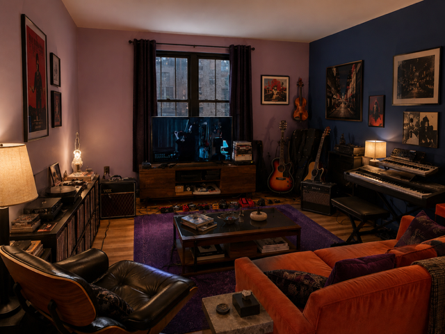

Collected
silences

No. 001 · date withheld
The Unopened Room
Oil and memory on linen. Origin uncertain. The inventory notes only that the work arrived already facing the wall.

Oil and memory on linen. Origin uncertain. The inventory notes only that the work arrived already facing the wall.